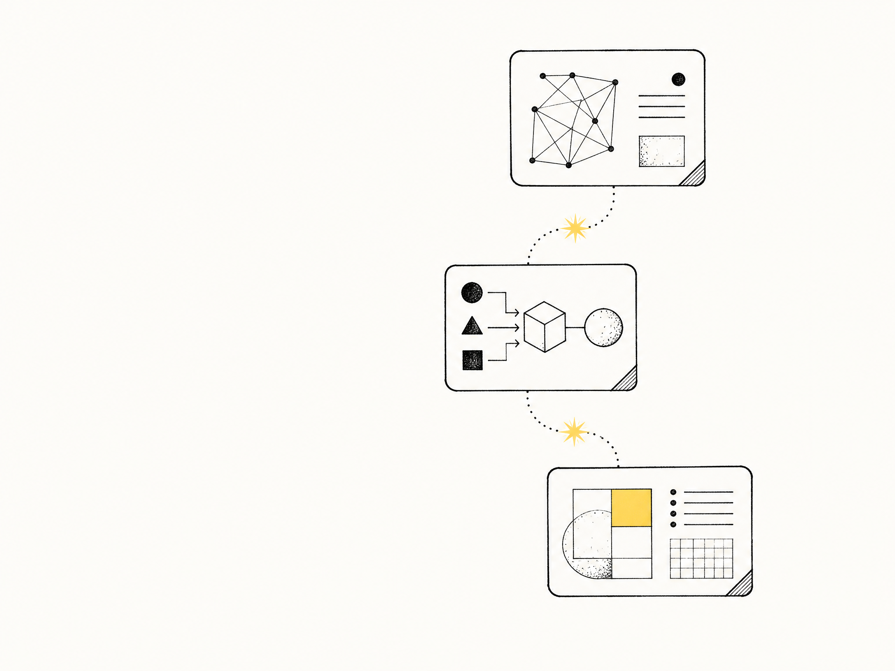

灵犀 AI 实时通话
端云协同的智能打断机制设计与 AIGC 自动化生产。
阅读完整案例 ↗张 梓 琪
AI PRODUCT MANAGER / DESIGN
AI 产品经理 · 产品需求与设计
实时交互、内容生产与复杂业务系统。
AI 产品 · 数据中台 · 政务系统
端云协同的智能打断机制设计与 AIGC 自动化生产。
阅读完整案例 ↗基于大语言模型的智能内容生产系统。

覆盖 91 城的二手房交易数据分析平台。
政务数字化中台架构设计，省市县三级联动。
从政务业务、数据产品，
走向 AI 交互与内容生产。
时间沿用原站项目记录。
从使用中的问题开始，
把想法做成可以体验的原型。
菜单栏图标多了，常用的反而不好找。梓栏探索把图标分为「显示」与「收起」，让收纳和找回都更直接。
把分屏、窗口预览和快捷操作放到同一套交互里。重点是减少来回切换，让常用操作更容易找到。
从 Dock 图标出发查看窗口，再决定切换、收起或继续操作。用可交互需求稿讨论触发方式和异常状态。
用 AI 辅助探索图像。
试试纸纹、留白和不同的叙事方式。
关于模型选型、产品落地
与工作实践的公开记录。
前往各平台公开主页阅读。
AI 产品经理
与架构设计师。
10 年产品经验，专注于将 AIGC、RTC 与 Agent 的技术可能性转化为真实用户价值。
从 0 到 1 的产品工作，不止是构建功能，更是在技术可行性、用户理解与商业目标之间找到可持续的平衡。
工作之外，我探索 Mac 桌面工具、个人知识库，也制作影像和海报。AI 参与执行，我负责目标、取舍和体验判断。
你好，我是张梓琪。比起列出会用多少种 AI 工具，我更想介绍：我用它们做过什么，又为什么愿意一直做下去。
我的工作是产品需求沟通与设计，参与过企业 AI 平台、智能会议助手等产品，其中已有产品投入使用、部署到客户现场。我习惯从具体场景出发，把模糊的想法梳理成流程、原型和方案，再把产品能力讲成用户能理解的价值。
工作之外，我也会主动给自己找问题：Mac 菜单栏太拥挤，就推动做一个自己的桌面工具；窗口切换不顺手，就基于开源项目继续改造；资料越积越多，就探索把概念、文档和代码关联起来的个人知识库。对我来说，一句“这里能不能更好用”，经常会变成一个持续迭代的项目。
我也喜欢研究影像、剪辑、海报和动效。从产品原型到演示视频，我既关心逻辑能不能走通，也关心别人愿不愿意看、能不能看懂。产品怎么做和产品怎么表达，是我愿意一起琢磨的事。
Codex 已经成为我日常工作的一部分，参与调研、设计、开发协作和内容制作。但我最常追问的，仍然是：“为什么这样做？”“我要怎么测？”“实际用起来真的顺手吗？”我会借助 AI 推进执行，也会为目标、取舍和验收保留自己的判断。
我希望寻找 AI 产品经理相关的机会，把理解业务、设计体验、动手验证和清楚表达这几件事放在一起，持续做出有人愿意用的产品。
用户需求洞察
技术可行性评估
数据驱动迭代
AIGC · RTC · Agent
RAG · 多模态交互
Prompt 工程
产品架构 · 指标体系
团队协作
商业化落地